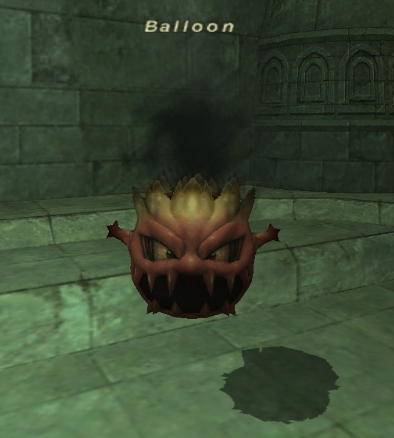

Level 75 reference · Zenith rules
|
 Image source |


| Zone | Level | Drops | Steal | Spawns |
Notes |
|---|---|---|---|---|---|
|
8-10 |
6 |
A, S, M | ||
|
8-10 |
5 |
A, S, M | ||
|
8-10 |
2 |
A, S, M | |||
|
8-10 |
6 |
A, S, M | |||
|
HP = Detects Low HP; M = Detects Magic; Sc = Follows by Scent; T(S) = True-sight; T(H) = True-hearing JA = Detects job abilities; WS = Detects weaponskills; Z(D) = Asleep in Daytime; Z(N) = Asleep at Nighttime | |||||

Adapted from Eden Wiki: Balloon · Contributors and history · CC BY-SA 4.0. Revision 2724. Layout, links and optional background text adapted for Zenith.